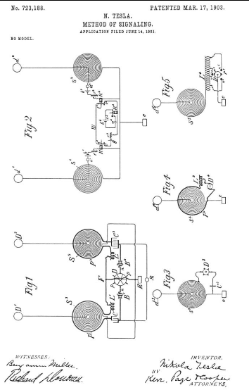

Descarga la patente original en esté enlace


Que se sepa que yo, NIKOLA TESLA , ciudadano de los Estados Unidos, residente en el distrito de Manhattan, en la ciudad, condado y estado de Nueva York, he inventado ciertas mejoras nuevas y útiles en los métodos de señalización, de que a continuación es una especificación, haciendo referencia a los dibujos que acompañan y forman parte de la misma.
En ciertos sistemas para transmitir mensajes inteligibles o gobernar los movimientos y operaciones de autómatas distantes, los impulsos eléctricos o las perturbaciones producidas por aparatos adecuados se transmiten a través de los medios naturales a un circuito receptor capaz de responder a los impulsos y de ese modo efectuar el control de otros aparatos. . Por lo general, se conecta al circuito receptor un dispositivo especial, muy sensible, que para hacerlo aún más susceptible y reducir la posibilidad de que se vea afectado por perturbaciones extrañas, se ajusta cuidadosamente para que esté en sintonía con el transmisor. Mediante un diseño científico de los circuitos de envío y recepción y otros aparatos y un hábil ajuste de los mismos, estos objetos pueden lograrse en cierta medida; pero en una larga experiencia he descubierto que, a pesar de todas las ventajas constructivas y los recursos experimentales, este método es en muchos casos inadecuado. Por lo tanto, aunque he logrado operar de manera selectiva en ciertas condiciones favorables, más de cien receptores en la mayoría de los casos, es factible trabajar con éxito solo unos pocos, y el número disminuye rápidamente a medida que, debido a una gran distancia u otras causas, la energía disponible en los circuitos sintonizados se vuelven más pequeños y los receptores necesariamente más delicados. Evidentemente, un circuito, por bien construido y ajustado que sea para responder exclusivamente a las vibraciones de un período, puede verse afectado por armónicos superiores y aún más por los inferiores. Cuando las oscilaciones son de muy alta frecuencia, El número de armónicos efectivos puede ser grande y, en consecuencia, el receptor puede verse fácilmente perturbado por influencias externas hasta tal punto que cuando se utilizan ondas muy cortas, como las producidas por los aparatos de chispa Hertziana, pocas ventajas a este respecto se derivan de la sintonización. los circuitos. Siendo un requisito imperativo en la mayoría de las aplicaciones prácticas de tales sistemas de señalización o transmisión de inteligencia que las señales o mensajes sean exclusivos o privados, es muy conveniente eliminar las limitaciones anteriores, especialmente en vista del hecho que he observado que la influencia de potentes perturbaciones eléctricas sobre receptores sensibles se extiende incluso en tierra a distancias de muchos cientos de millas y, en consecuencia, de acuerdo con la teoría, aún más lejos en el mar.
En términos generales, esta invención consiste en generar dos o más tipos o clases de perturbaciones o impulsos de carácter distintivo con respecto a su efecto sobre un circuito receptor y hacer funcionar de ese modo un receptor distante que comprende dos o más circuitos, cada uno de los cuales está sintonizado a responden exclusivamente a las perturbaciones o impulsos de un tipo o clase y están dispuestos de manera que la operación del receptor dependa de su acción conjunta o resultante.
Empleando sólo dos tipos de perturbaciones o series de impulsos en lugar de uno, como se ha hecho hasta ahora, para operar un receptor de este tipo, he descubierto que la seguridad contra las influencias perturbadoras de otras fuentes aumenta hasta tal punto que creo que esto número suficiente en la mayoría de los casos para que el intercambio de señales o mensajes sea fiable y exclusivo; pero en casos excepcionales se puede utilizar un número mayor y se puede alcanzar un grado de seguridad contra interferencias externas mutuas, comparable al que ofrece una cerradura de combinación. La responsabilidad de un receptor que se vea afectado por perturbaciones provenientes de otras fuentes, así como la de las señales o mensajes recibidos por instrumentos para los que no están destinados, puede, sin embargo.
Evidentemente existen muchísimas formas de generar impulsos o perturbaciones de cualquier longitud de onda, forma de onda, número u orden de sucesión, o de cualquier carácter especial, que sean capaces de cumplir con los requisitos antes indicados, y también existen muchas formas en el que tales impulsos o perturbaciones pueden cooperar y hacer que el receptor se active, y dado que la habilidad y el conocimiento práctico en estos nuevos campos solo pueden adquirirse mediante una larga experiencia, el grado de seguridad y perfección alcanzado dependerá necesariamente de la habilidad y los recursos del experto que aplica mi invento;pero a fin de permitir que la misma sea practicada con éxito por cualquier persona que posea sólo el conocimiento y la experiencia más generales en estas ramas, describiré el plan más simple de llevarla a cabo que actualmente conozco.
Para una mejor comprensión del tema, ahora se hace referencia a los dibujos adjuntos, en los que:
Las figuras 1 y 2 representan esquemáticamente un aparato y conexiones de circuito empleadas en las estaciones de envío y recepción, respectivamente, para la práctica de mi invención; y Figs. 3, 4 y 5, medios modificados que pueden emplearse en la aplicación práctica de la invención.
En la figura 1, S1 y S2 son dos bobinas enrolladas en espiral o conductores conectados con sus extremos internos a los terminales D1 y D2 preferentemente elevados , respectivamente, y con sus extremos exteriores a una placa de tierra E. Estas dos bobinas , conductores o sistemas D1 S1 E y D2 S2 E tienen períodos de vibración diferentes y adecuadamente elegidos y, como se señala en otras patentes relacionadas con mi sistema de transmisión de energía e inteligencia, sus longitudes deben ser tales que los puntos de máxima presión desarrollados allí coinciden con los terminales elevados D 1 D 2. Por períodos de vibración elegidos de manera adecuada, se entiende que los períodos garantizarán la mayor seguridad contra interferencias, tanto mutuas como externas. Los dos sistemas pueden tener oscilaciones eléctricas impresas sobre ellos de cualquier manera deseada convenientemente energizándolos a través de los primarios P1 y P2 , colocados cerca de ellos. Las inductancias ajustables L1 y L2 se incluyen preferiblemente en los circuitos primarios principalmente con el fin de regular las velocidades de las oscilaciones primarias. En los dibujos estos primarios P1 y P2 rodean las bobinas S1 S2 y se unen en serie a través de las inductancias L 1 L2 , conductor F, condensadores C1 y C2 , portaescobillas B1 y B2, y un disco dentado D, que se conecta al conductor F y, si se desea, también a la placa de tierra E, como se muestra, dos así se forman circuitos primarios independientes. Los condensadores C 1 y C 2 son de tal capacidad y las inductancias L 1 y L 2 están tan ajustadas que cada primario está en estrecha resonancia con su sistema secundario, como he explicado en otras patentes que me han otorgado. Los portaescobillas B 1 y B 2son aptos independientemente del ajuste angular y, si es necesario, también lateral, de modo que se pueda obtener cualquier orden de sucesión deseado o cualquier diferencia de intervalo de tiempo entre las descargas que se producen en los dos circuitos primarios. Los condensadores se energizan desde una fuente adecuada S, preferiblemente de alto potencial, y el disco D se hace girar, sus proyecciones o dientes pp llegando a intervalos periódicamente recurrentes en muy proximidad o, según el caso, en contacto con conductores varillas o escobillas nn hacen que los condensadores se descarguen en rápida sucesión a través de sus respectivos circuitos. De esta manera los dos sistemas secundarios D1 S2 E y D2 S2 E se establecen en vibración y oscilan libremente cada uno a su velocidad adecuada durante un cierto período de tiempo en cada descarga. Las dos vibraciones se imprimen en el suelo a través de la placa E y se propagan a una distancia hasta llegar a la estación receptora, que tiene dos circuitos o sistemas similares es 1 d 1 y es 2 d 2, dispuestos y conectados de la misma manera y sintonizados con los sistemas en la estación emisora, de modo que cada uno responda exclusivamente a una de las dos vibraciones producidas por el aparato transmisor. Se observan las mismas reglas de ajuste con respecto a los circuitos receptores, teniendo cuidado además de que la sintonización se efectúe cuando todo el aparato esté conectado a los circuitos y colocado en posición, ya que cualquier cambio puede modificar más o menos la vibración. Cada una de las bobinas receptoras s 1 y s 2 es derivada por un circuito local que contiene, respectivamente, dispositivos sensibles a 1 a 2 , baterías b 1 b 2 , resistencias ajustables r1 r 2 , y relés sensibles R 1 R 2 , todos unidos en serie, como se muestra. Las conexiones y disposiciones precisas de los diversos instrumentos receptores son en gran medida irrelevantes y pueden variarse de muchas formas. Los dispositivos sensibles a 1 a 2 pueden ser cualquiera de los dispositivos bien conocidos de este tipo, como, por ejemplo, dos terminales conductores separados por un diminuto espacio de aire o una película delgada de dieléctrico que se tensa o debilita con una batería. u otros medios hasta el punto de quebrarse y dar paso a la menor influencia perturbadora. Su regreso al estado sensible normal puede asegurarse interrumpiendo momentáneamente los circuitos de la batería después de cada operación o de otra manera. Los relés R 1R 2 tienen armaduras l1 l2 , que están conectadas por un cable w y cuando son atraídas establecen contactos eléctricos c 1 y c 2 , cerrando así un circuito que contiene una batería b 3 y resistencia ajustable r 3 y un relé R 3 . A partir de la descripción anterior, se verá fácilmente que el relé R 3 se activará sólo cuando ambos contactos c 1 y c 2 estén cerrados.
El aparato de la estación emisora puede controlarse de cualquier manera adecuada, como, por ejemplo, cerrando momentáneamente el circuito de la fuente S, emitiendo dos vibraciones eléctricas diferentes simultáneamente o en rápida sucesión, según se desee, en cada cierre. del circuito. Los dos circuitos receptores en la estación distante, cada uno sintonizado para responder a las vibraciones producidas por uno de los elementos del transmisor, afectan los dispositivos sensibles a 1 y a 2 y hacen que los relés R 1 y R 2 sean operados y contactados. c 1 y c 2 para cerrar, accionando así el receptor o relé R 3, que a su vez establece un contacto c 3 y pone en funcionamiento un dispositivo a 3 mediante una batería d 4 , incluida en un circuito local, como se muestra. Pero evidentemente si por alguna perturbación extraña sólo uno de los circuitos de la estación receptora se ve afectado, el relé R 3no responderá. De esta manera, se puede llevar a cabo una comunicación con una seguridad mucho mayor contra interferencias y se puede asegurar la privacidad de los mensajes. Se supone que la estación receptora mostrada en la figura 2 es una que no requiere un mensaje de retorno; pero si el uso del sistema es tal que esto es necesario, entonces las dos estaciones estarán equipadas de manera similar, y se puede recurrir a cualquier medio conocido, que no se crea necesario ilustrar aquí, para habilitar el aparato en cada estación. para ser utilizado a su vez como transmisor y receptor. Del mismo modo, el funcionamiento de un receptor, como R 3, puede hacerse dependiente en lugar de dos de más de dos de tales sistemas o circuitos de transmisión, y así se puede lograr cualquier grado deseado de exclusividad o privacidad y seguridad contra perturbaciones externas. El aparato ilustrado en las Figs. 1 y 2 permite, sin embargo, obtener resultados especiales mediante el ajuste del orden de sucesión de las descargas de los circuitos primarios P 1 y P 2 o del intervalo de tiempo entre dichas descargas. Para ilustrar: La acción de los relés R 1 R 2 puede regularse ajustando los pesos de las palancas l 1 l 2 , o la fuerza de las baterías b 1 b 2, o las resistencias r 1 r 2 , o de otras formas bien conocidas, de modo que cuando exista un cierto orden de sucesión o intervalo de tiempo entre las descargas de los circuitos primarios P 1 y P 1 en la estación emisora, las palancas l 1 y l 2 cerrará los contactos c 1 y c 2 en el mismo instante, y así operará el relé R 3, pero no producirá este resultado cuando el orden de sucesión o el intervalo de tiempo entre las descargas en los circuitos primarios sea otro. Por estos u otros medios similares se puede lograr una seguridad adicional contra perturbaciones de otras fuentes y, por otro lado, la posibilidad de efectuar la operación de señalización variando el orden de sucesión de las descargas de los dos circuitos. En lugar de cerrar y abrir el circuito de la fuente S 1 , como se indicó anteriormente, con el fin de enviar señales distintas, puede ser conveniente simplemente alterar el período de cualquiera de los circuitos de transmisión arbitrariamente, variando la inductancia de los primarios.
Evidentemente, no hay necesidad de utilizar transmisores con dos o más elementos o circuitos distintos, como S 1 y S 2 , ya que una sucesión de ondas o impulsos de diferentes características puede producirse mediante un instrumento que tenga un solo circuito. Algunas de las muchas formas que fácilmente se le sugerirán al experto que aplique mi invención se ilustran en las Figs. 3, 4 y 5. En la Fig. 3 un sistema de transmisión e s 3 d 3 es desviado parcialmente por una rueda o disco giratorio D 3 , que puede ser similar al ilustrado en la Fig. 1 y que corta periódicamente una porción de la bobina o el conductor s 3 o, si se desea, lo puentea mediante un condensador ajustable C3 , alterando así la vibración del sistema e s 3 d 3 a intervalos adecuados y causando dos tipos distintos o clases de impulsos para ser emitida en rápida sucesión por el remitente. En la Fig.4 se produce un resultado similar en el sistema e s 4 d 4 cortocircuitando periódicamente, a través de una bobina de inducción L 3 y un disco giratorio D 4 con segmentos aislantes y conductores, un circuito p 4 en relación inductiva a dicho sistema. De nuevo, en la Fig. 5, un sistema produce tres vibraciones distintas e s 5 d 5, este resultado se produce mediante la inserción periódica de varias vueltas de una bobina de inducción L 4 en serie con el sistema de oscilación mediante un disco giratorio B 5 con dos proyecciones p 5 p 5 y tres varillas o cepillos n 5, colocados en un ángulo de ciento veinte grados entre sí. Los tres sistemas de transmisión o circuitos así producidos pueden energizarse de la misma manera que los de la Fig. 1 o de cualquier otra manera conveniente. Correspondiente a cada uno de estos casos, la estación receptora puede estar provista de dos o tres circuitos de manera análoga a la ilustrada en la Fig.2, entendiéndose, por supuesto, que las diferentes vibraciones o perturbaciones emitidas por el emisor siguen en tal forma rápida sucesión entre sí que son prácticamente simultáneos en cuanto al funcionamiento de relés como R 1 y R 2está preocupado. Evidentemente, sin embargo, no es necesario emplear dos o más circuitos de recepción, pero también se puede utilizar un solo circuito en la estación de recepción construida y dispuesta como los circuitos o sistemas de transmisión ilustrados en las Figs. 3, 4 y 5, en cuyo caso los discos correspondientes, como D 3 D 4 D 5, en el envío se conducirá en sincronismo con los de las estaciones receptoras en la medida en que sea necesario para asegurar el resultado deseado; pero cualquiera que sea la naturaleza de los dispositivos específicos empleados, se verá que la idea fundamental en mi invención es la operación de un receptor por el efecto conjunto o resultante de dos o más circuitos, cada uno sintonizado para responder exclusivamente a ondas, impulsos o vibraciones de cierto tipo o clase producida simultánea o sucesivamente por un transmisor adecuado.
Se verá a partir de una consideración de la naturaleza del método descrito anteriormente que la invención es aplicable no solo de la manera especial descrita, en la que la transmisión de los impulsos se efectúa a través de medios naturales, sino para la transmisión de energía para cualquier propósito. y cualquiera que sea el medio a través del cual se transmiten los impulsos.
Lo que digo es:
Fechado el día 17 de Marzo de 1903.
Nikola Tesla.